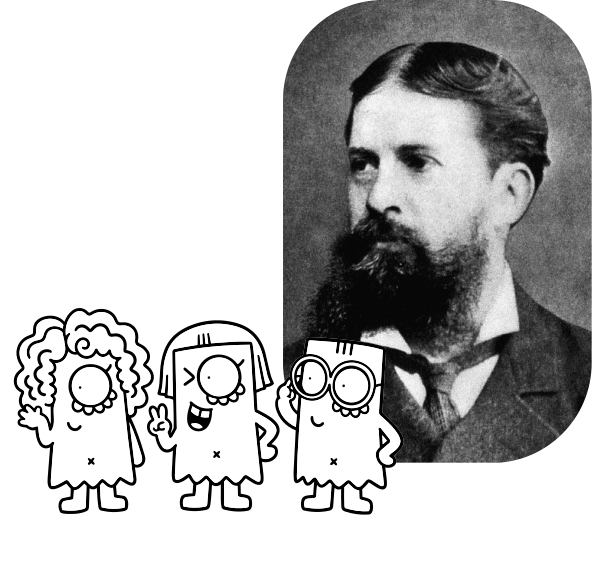
Definición:Razonamiento hipotético para formular una predicción general sin certeza de éxito, usado como la única vía racional para planear la conducta futura.
Ejemplo:Te despiertas por la mañana, sales al patio o miras por la ventana y ves que el suelo, las plantas y los coches están completamente mojados.
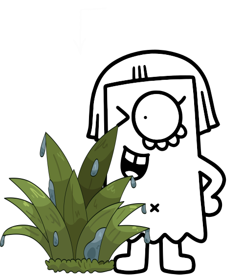
Definición:Es un signo que representa su objeto mediante una regla o razonamiento, llevando al intérprete hacia una determinada conclusión.
Ejemplo:La Organización Mundial de la Salud (OMS) señala que el consumo excesivo de azúcar refinada incrementa el riesgo de padecer diabetes tipo 2.

Definición:Es un signo considerado como una cualidad o posibilidad que puede funcionar como signo.
Ejemplo:La cualidad del color rojo antes de estar aplicada a una señal o manzana.
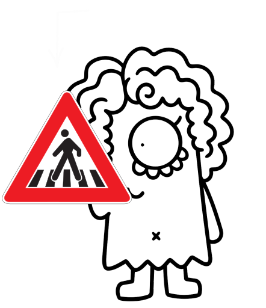
Definición:Razonamiento lógico cuya validez garantiza que, a partir de premisas verdaderas, se obtendrán conclusiones verdaderas en la mayoría de los casos a la larga.
Ejemplo:Tu paquete llegará dentro del plazo prometido.

Definición:También llamado signo dicente o dicisigno es un signo que representa algo como una existencia o hecho y, por lo tanto, proporciona información sobre aquello que representa.
Ejemplo:Un cartel vial que indica "Límite de velocidad: 60 km/h".

Definición:Para Peirce, el ícono es un signo que representa a su objeto principalmente porque existe una relación de semejanza entre ambos.
Ejemplo:Un retrato pintado o la caricatura de una persona es un ícono, ya que reproduce los rasgos faciales del sujeto y lo representa basándose en su parecido o semejanza física.
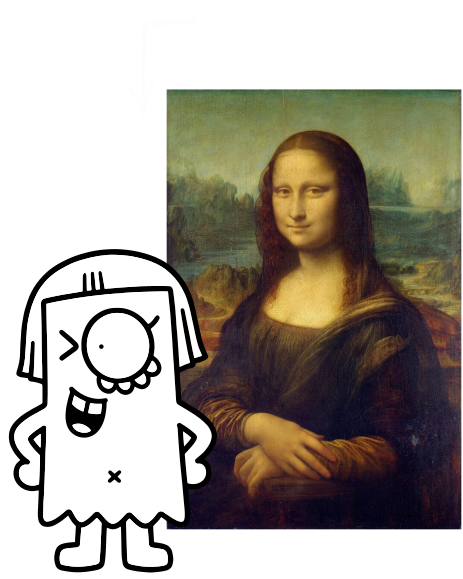
Definición:El índice es un signo que tiene una conexión real o directa con aquello que representa. No necesita parecerse al objeto, sino que existe una relación entre ambos.
Ejemplo:El mercurio subiendo en un termómetro es un índice de un aumento de temperatura.
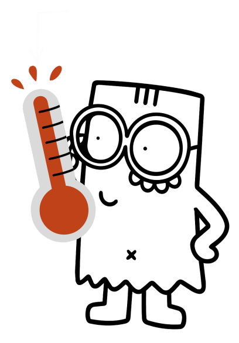
Definición:Es un signo que corresponde a una cosa, acontecimiento o existencia concreta e individual que funciona como signo.
Ejemplo: Un rayo que cae en un campo: Es un evento físico individual en un instante determinado que indica una tormenta eléctrica real.

Definición:Máxima filosófica propuesta por Peirce que establece que el significado de un concepto se define por las consecuencias prácticas que tiene su objeto.
Ejemplo:Definir la dureza del diamante por su capacidad práctica para rayar otros materiales.
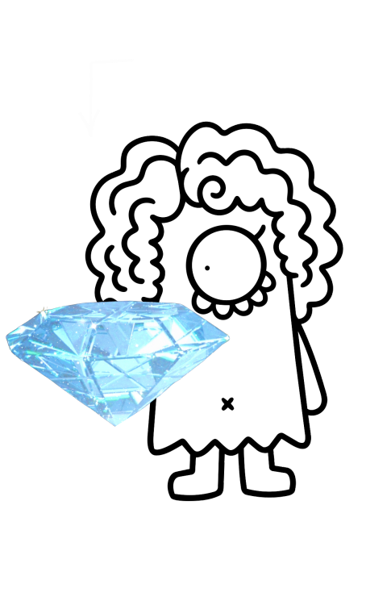
Definición:El modo de ser absoluto de algo en sí mismo, sin relacionarse con nada más; representa la pura cualidad, la aparente posibilidad y el sentir sin analizar.
Ejemplo:Dar la mano a tu perro.
La galleta que tienes en la mano.
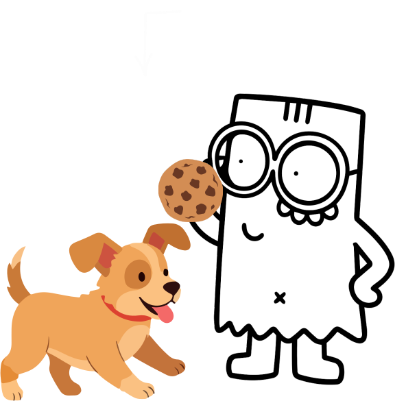
Definición:Es un signo que representa una posibilidad o concepto, pero que todavía no afirma que algo exista o que una determinada situación sea verdadera.
Ejemplo:Posibilidad: Sugiere la idea de un cuerpo vistiendo algo ("aquí podría ir una prenda").
Sin afirmación: No muestra un vestuario real ni confirma que la colección exista.
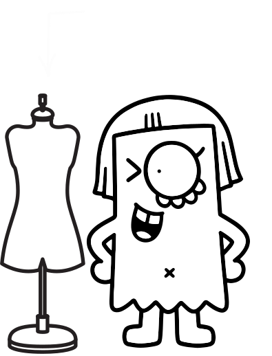
Definición:El modo de ser de algo en relación con otra cosa; representa la experiencia de la acción bruta, la resistencia física y el impacto directo de un hecho singular sobre otro.
Ejemplo:El perro levantando su pata física sobre tu palma.
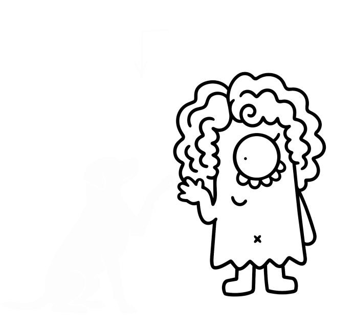
Definición:Es el proceso mediante el cual algo funciona como signo. Para Ch. S. Peirce, es una relación triádica irreducible entre el signo, su objeto y su intérprete.
Ejemplo:El ícono de una lupa en una web
Signo: El dibujo de la lupa.
Objeto: La función del buscador interno.
Interpretante: Entiendes "aquí puedo buscar" y haces clic para escribir
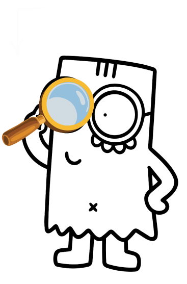
Definición:Es un signo que representa a su objeto debido a una ley, convención, hábito o acuerdo establecido. Por eso, no necesita parecerse físicamente a lo que representa.
Ejemplo:La luz roja del semáforo.
Representa la orden de detenerse no porque la luz roja se parezca físicamente a frenar o a un auto detenido, sino porque la sociedad acordó y fijó mediante una ley de tránsito que ese color significa alto.
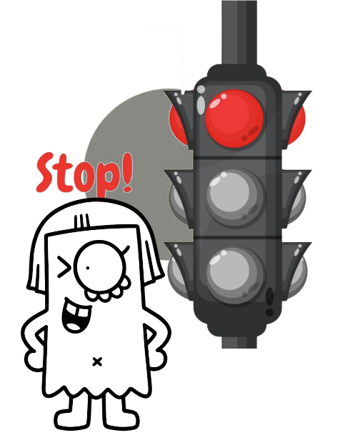
Definición:Es un signo que corresponde a una cosa, acontecimiento o existencia concreta e individual que funciona como signo.
Ejemplo:[El sonido específico que emite una persona en un momento dado para pedir ayuda ("¡Auxilio!").
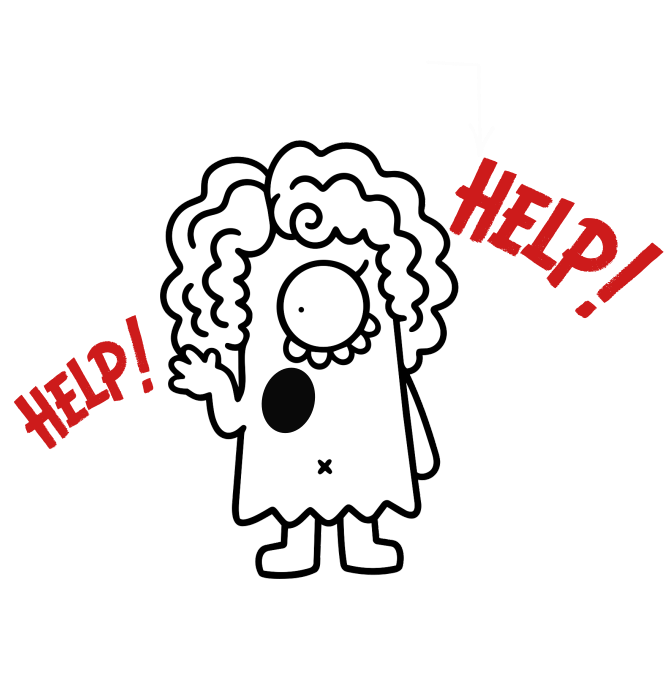
Definición:El modo de ser que conecta a una primera cosa con una segunda; representa la mediación, el pensamiento, las leyes generales, las reglas y los hábitos.
Ejemplo:El perro aprendió la regla general de que "si levanto la pata cuando me lo piden, recibo la galleta". Ese aprendizaje es la mediación.
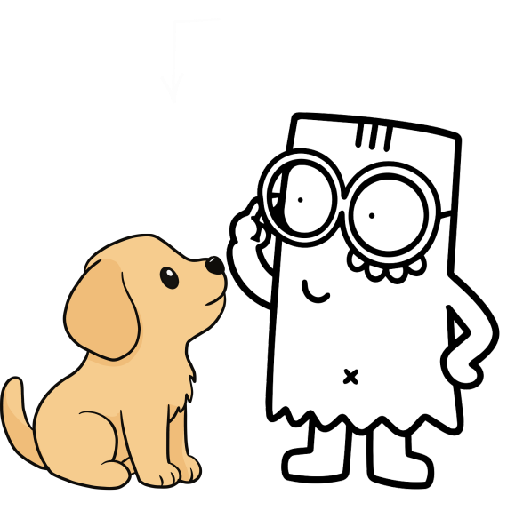